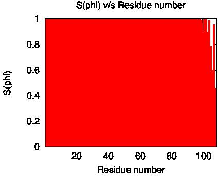
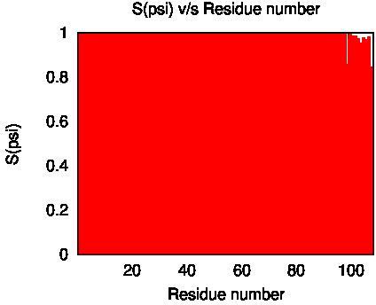
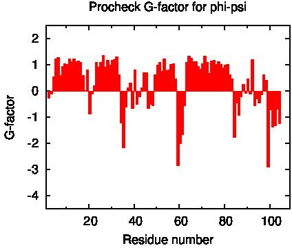
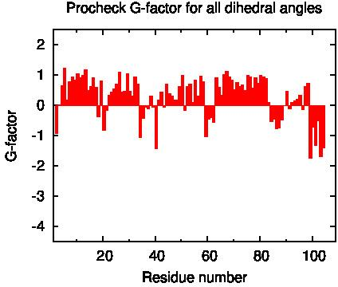
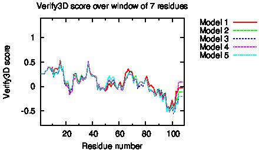

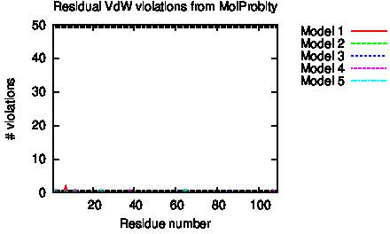
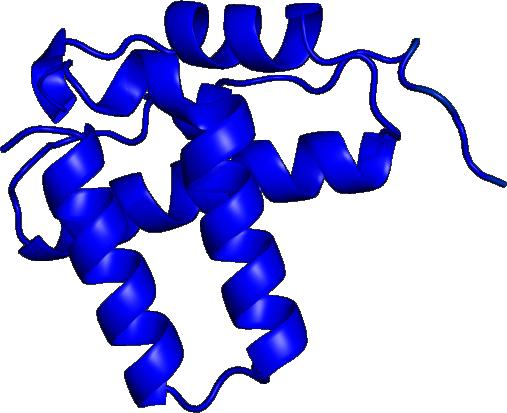
Residue Plot of Ramachandran anlysis(based on data from Richardson Lab's Molprobity)
|
|
Secondary Structure Elements:
alpha helices: 4A-17A, 22A-34A, 49A-58A, 63A-82A
beta strands:
FIDs deposited in the BMRB? no
Comparison of core atoms:
| DAOP > 1.8 Å : | A:2..A:98, A:100..A:102 | |
| FindCore2 : | A:1..A:103 | |
| CYRANGE : | 3..96 |
| RMSD | All residues | Ordered residues2 | Selected residues3 |
| All backbone atoms | 0.9 Å | 0.3 Å | 0.3 Å |
| All heavy atoms | 1.3 Å | 0.5 Å | 0.5 Å |
Ramachandran Plot Summary for selected residues3 from Procheck
| Most favoured regions | Additionally allowed regions | Generously allowed regions | Disallowed regions |
| 94.8% | 5.2% | 0.0% | 0.0% |
Ramachandran Plot Summary for selected residues3 from Richardson Lab's Molprobity
| Most favoured regions | Allowed regions | Disallowed regions | View plot View model summary |
| 99.4% | 0.6% | 0% |
Global quality scores
| Program | Verify3D | ProsaII (-ve) | Procheck (phi-psi)3 | Procheck (all)3 | MolProbity Clashscore |
| Raw score | 0.06 | N/A | 0.33 | 0.27 | 0.00 |
| Z-score1 | -6.42 | N/A | 1.61 | 1.60 | 1.53 |
Close Contacts and Deviations from Ideal Geometry (from PDB validation software)
| Number of close contacts (within 1.6 Å for H atoms, 2.2 Å for heavy atoms): | 0 |
| RMS deviation for bond angles: | 1.7 ° |
| RMS deviation for bond lengths: | 0.012 Å |
1 With respect to mean and standard deviation for a set of 252 X-ray structures < 500 residues, of resolution <= 1.80 Å, R-factor <= 0.25 and R-free <= 0.28; a positive value indicates a 'better' score
2 Ordered residues (DAOP): 2A-104A
3 Selected residues DAOP with S(phi)+S(psi)>=1.8 : 2A-104A
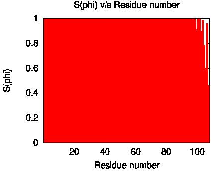
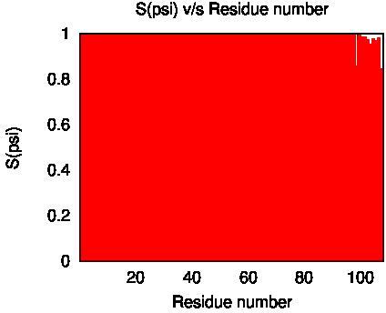
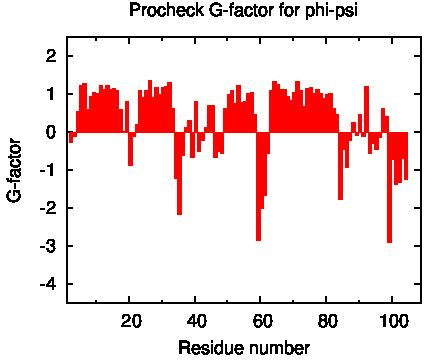
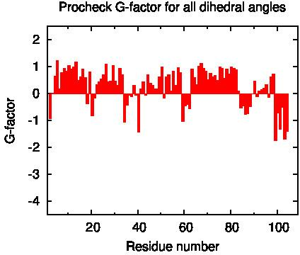
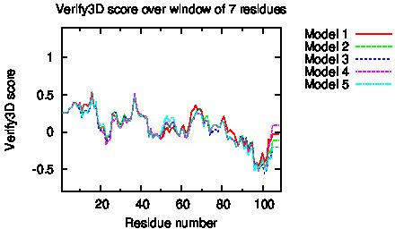
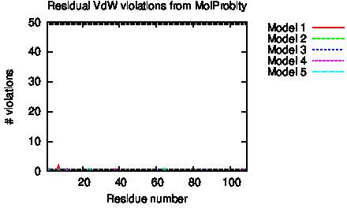
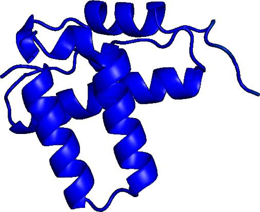
Residue Plot of Ramachandran anlysis(based on data from Richardson Lab's Molprobity)
References:
1. Bhattacharya A, Tejero R and Montelione GT, "Evaluating protein structures determined by structural genomics consortia". Proteins 2007, 66:778-795
2. Tejero R, Snyder D, Mao B, Aramini JM and Montelione GT, "PDBStat: a universal restraint converter and restraint analysis software package for protein NMR". J Biomol NMR 2013, 56:337-351
3. Luthy R, Bowie JU and Eisenberg D, "Assessment of protein models with three-dimensional profiles". Nature 1992, 356:83-85
4. Bowie JU, Luthy R and Eisenberg D, "A Method to identify protein sequences that fold into a known three-dimensional structure". Science 1991, 253:164-169
5. Sippl MJ, "Recognition of errors in three-dimensional structures of proteins". Proteins 1993, 17:355-362
6. Sippl MJ, "Calculation of conformation ensembles from potentials of mean force". J Mol Biol 1990, 213:859-883
7. Laskowski RA et al, "AQUA and PROCHECK_NMR: programs for checking the quality of proteins structures solved by NMR". J Biomolec NMR 1996, 8:477-486
8. Laskowski RA et al "PROCHECK: a program to check the stereochemical quality of protein structures". J Appl Cryst 1993, 26:283-291
9. Word JM et al, "Exploring steric constrains on protein mutations using MAGE / PROBE". Prot Sci 2000, 9:2251-2259
10. Word JM et al, "Asparagine and glutamine: using hydrogen atom contacts in the choice of side-chain amide orientation". J Mol Biol 1999, 285:1735-1747
11. Word JM et al, "Visualizing and quantifying molecular goodness-of-fit: small-probe contact dots with explicit hydrogens". J Mol Biol 1999, 285:1711-1733
12. Luthy R, McLachlan AD and Eisenberg D, "Secondary structure-based profiles: use of structure-conserving scoring tables in searching protein sequence databases for structural similarities". Proteins 1991, 18:229-239
13. Richardson DC, Richardson J S, "The kinemage: a tool for scientific communication". Prot Sci 1992, 1(1):3-9
14. Guntërt P, Mumenthaler, C & Wüthrich, K "Torsion angle dynamics for NMR structure calculation with the new program DYANA". J. Mol. Biol 1997, 273:283-298
15. Lovell SC et al, "Structure validation by Calpha geometry: phi,psi and Cbeta deviation". Proteins 2003, 50:437-450
16. Kabsch W, Sander C, "Dictionary of protein secondary structure: pattern recognition of hydrogen-bonded and geometrical features". Biopolymers 1983, 22:2577-2637
17. Bagaria A, Jaravine, V, Huang YJ, Montelione, GT, and Guntert, P "Protein structure validation by generalized linear model root-mean-square deviation prediction". Protein Sci 2012) 21:229-238.